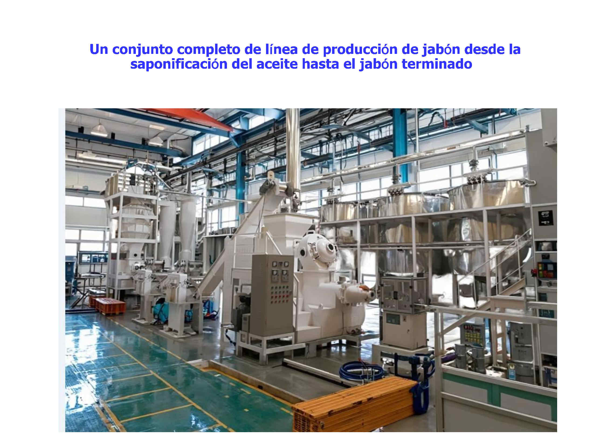
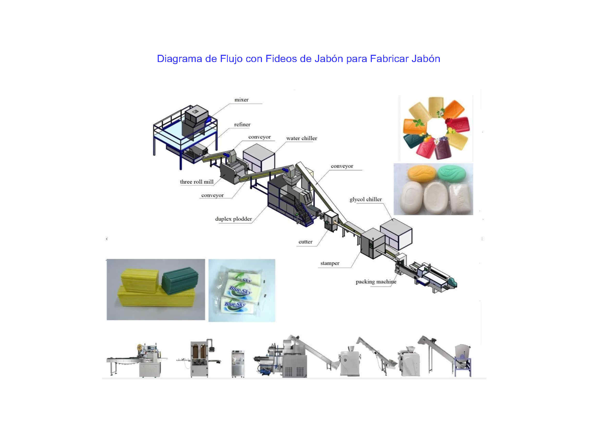
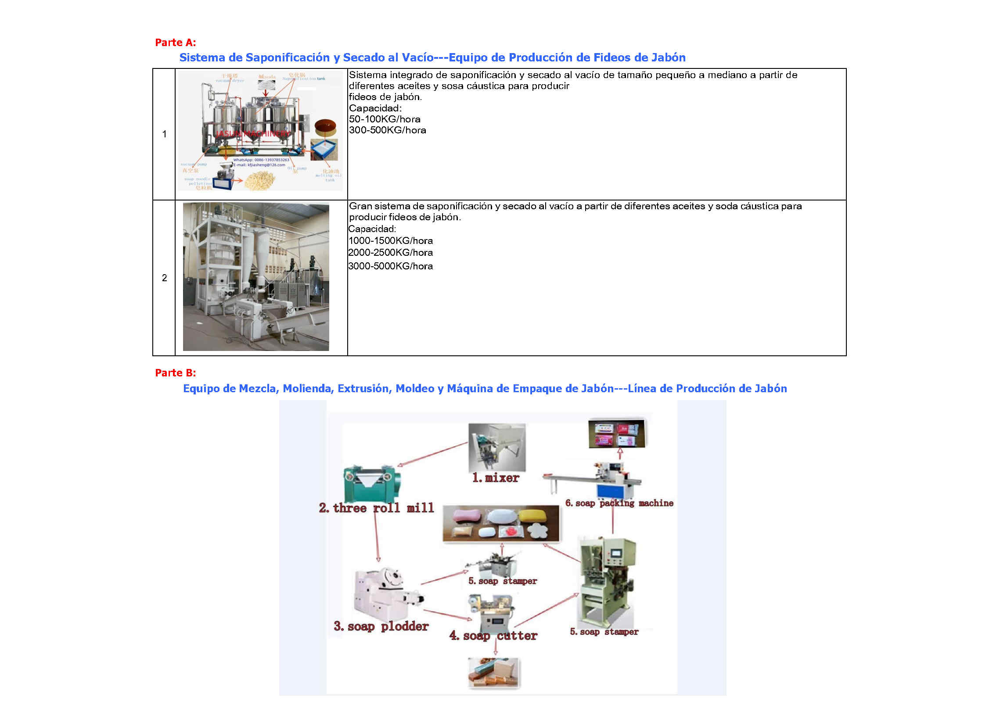
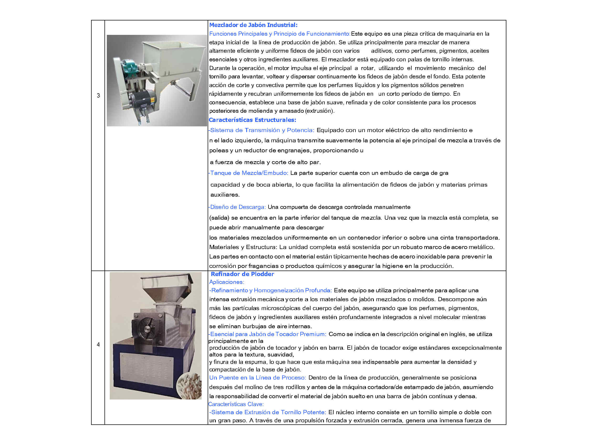
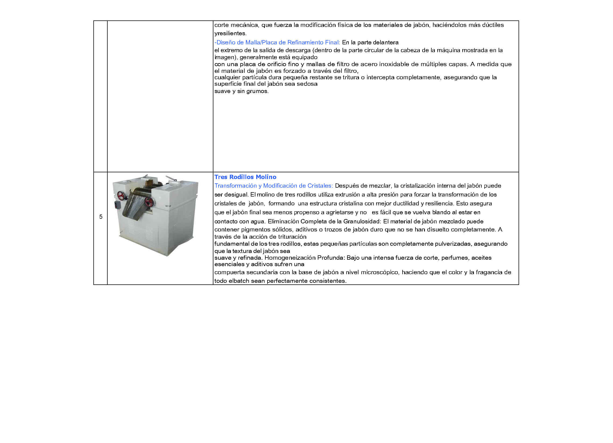
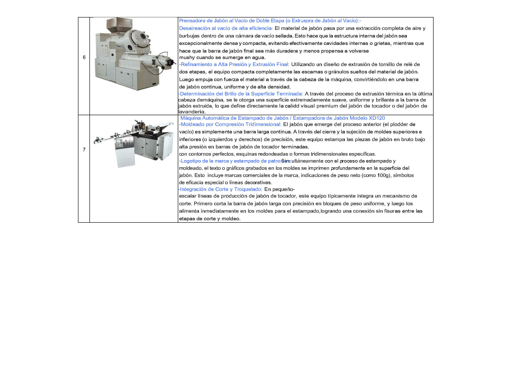
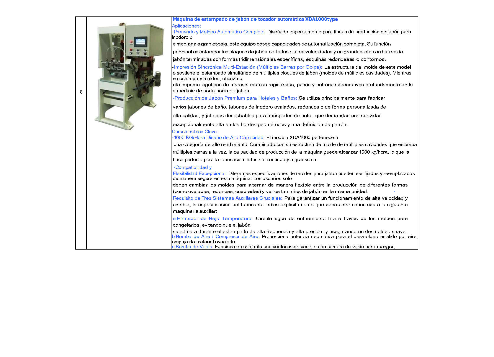
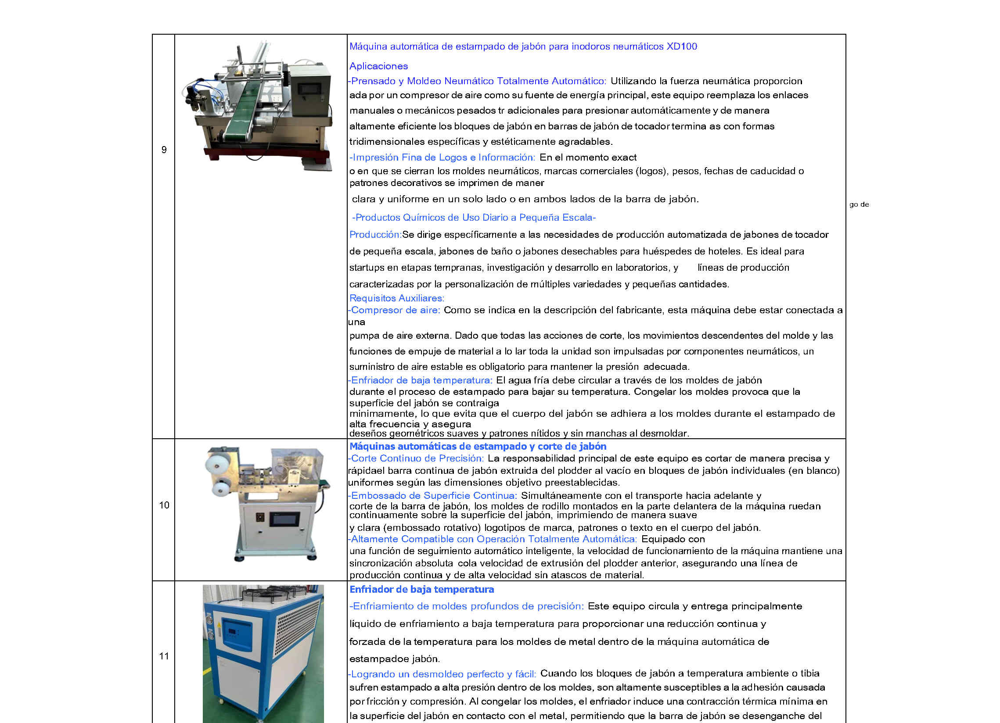

Maquinaria Profesional para la Fabricación de Jabón
Establecida en 2005, Kaifeng Jasun Industry Co., Ltd. se especializa en maquinaria profesional para la fabricación de jabón y líneas completas de producción. Con más de dos décadas de experiencia industrial, nos dedicamos a proporcionar a los fabricantes mundiales de jabón maquinaria de procesamiento de alto rendimiento, desde la saponificación hasta el envasado final del jabón. Nuestras máquinas se han exportado a más de 50 países y regiones, incluidos países desarrollados como los Estados Unidos.
El proceso se divide en dos etapas principales.
La primera etapa (Parte A) consiste en la saponificación y el secado para producir fideos de jabón. Esta reacción de saponificación combina aceite vegetal/grasas animales y sosa cáustica para formar la base del jabón. Esta base se procesa mediante un sistema de secado al vacío y una peletizadora, que la extruye en forma de fideos.
La segunda etapa (Parte B) transforma los fideos de jabón en jabón terminado. Los fideos se introducen en una mezcladora, donde se combinan con perfume y pigmento. La mezcla se introduce en una refinadora. Su objetivo principal es mezclar, homogeneizar y moler los ingredientes del jabón. Finalmente, los fideos pasan a un molino de tres rodillos, donde se muelen hasta obtener finas láminas de jabón. Estas finas láminas se transportan mediante una cinta transportadora a una extrusora de jabón de doble husillo o de un solo husillo, donde se refinan y se extruyen continuamente para formar una barra de jabón larga con la forma deseada. Posteriormente, la barra se corta y se le da forma para obtener barras individuales del tamaño requerido mediante una cortadora automática de jabón o una máquina de estampado de jabón. Finalmente, las barras de jabón terminadas se envuelven con una máquina de empaquetado (máquina de empaquetado de jabón tipo almohada, máquina de empaquetado de jabón en cajas o máquina de empaquetado de jabón en papel).







